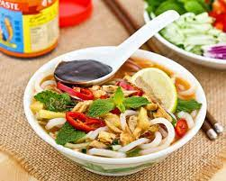

Penang Laksa

Description
Penang Laksa is a noodle soup dish that typically includes rice vermicelli noodles, fish-based broth, and a medley of flavorful ingredients. The broth is tangy and spicy, made with a rich base of fish stock, tamarind, lemongrass, galangal, and chili paste. The soup is traditionally garnished with various toppings like flaked mackerel, cucumber, onions, mint leaves, and a generous squeeze of lime juice.
Ingredients
For the broth:
- 500 grams mackerel or other white fish fillets
- 1 liter water
- 2 stalks lemongrass, bruised
- 3-4 slices galangal or ginger
- 4-5 kaffir lime leaves
- 2 tablespoons tamarind paste
- 3 tablespoons chili paste (such as sambal oelek)
- 2 tablespoons shrimp paste (belacan)
- Salt to taste
For the laksa:
- 200 grams rice vermicelli noodles, cooked according to package instructions
- 1 cucumber, julienned
- 1 red onion, thinly sliced
- Fresh mint leaves
- Fresh coriander leaves
- Bean sprouts (optional)
- Hard-boiled eggs, sliced (optional)
- Lime wedges, for serving
Steps
- Start by preparing the fish stock. In a large pot, bring the water to a boil. Add the fish fillets and cook until they are just cooked through. Remove the fish from the pot and set aside.
- Add lemongrass, galangal or ginger, kaffir lime leaves, tamarind paste, chili paste, and shrimp paste to the pot. Allow the broth to simmer for about 20-30 minutes to extract the flavors from the aromatics.
- Once the broth is well-infused, strain it to remove the solid ingredients and return the broth to the pot. Use a fork to flake the cooked fish fillets and add them back to the pot. Simmer the broth for an additional 5 minutes to allow the fish flavors to meld with the broth. Season with salt to taste.
- Prepare the rice vermicelli noodles according to the package instructions, then drain and set aside.
- To serve, place a portion of rice vermicelli noodles in each bowl. Ladle the hot fish broth over the noodles, making sure to include some fish flakes in each bowl.
- Garnish the laksa with julienned cucumber, sliced red onion, fresh mint leaves, fresh coriander leaves, bean sprouts (if desired), and sliced hard-boiled eggs (optional).
- Serve the Penang Laksa hot with lime wedges on the side. Squeeze lime juice over the laksa just before eating to enhance the flavors.
Penang Laksa is best enjoyed immediately while hot. It offers a delightful blend of tangy, spicy, and refreshing flavors that make it a beloved dish in Malaysian cuisine.